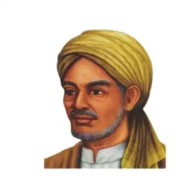
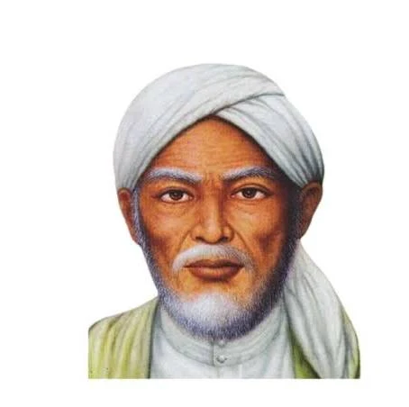
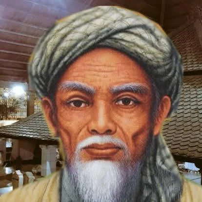
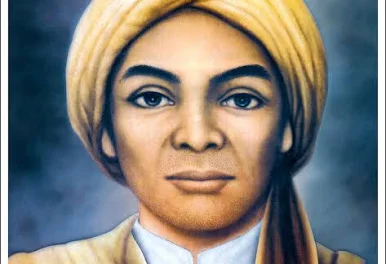
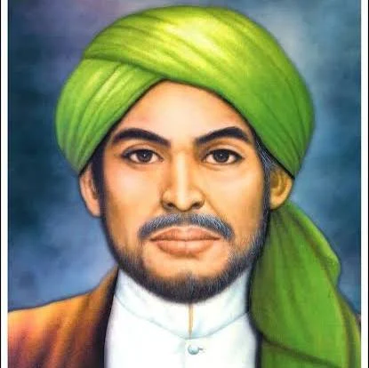
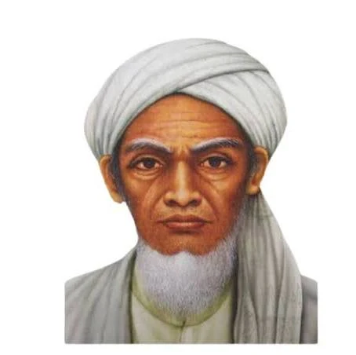
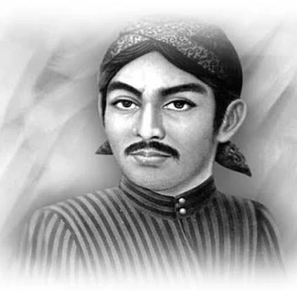
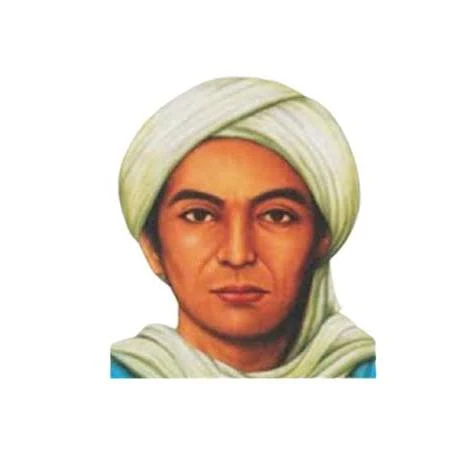
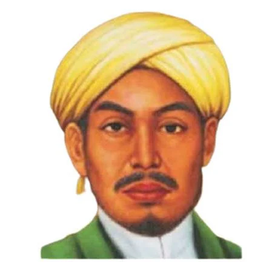

SEKILAS SEJARAH
Siapa Itu Walisongo?
Walisongo merupakan sebutan bagi sembilan tokoh ulama yang dikenal berperan penting dalam penyebaran agama Islam di Pulau Jawa. Mereka berdakwah dengan cara yang menyesuaikan kehidupan masyarakat pada masa itu.
Dalam menyebarkan Islam, Walisongo menggunakan berbagai pendekatan, seperti pendidikan, perdagangan, kesenian, kebudayaan, dan kegiatan sosial. Melalui pendekatan tersebut, ajaran Islam diperkenalkan secara bertahap dengan mengutamakan nilai-nilai kebaikan dan akhlak. Peran Walisongo menjadi bagian penting dalam sejarah perkembangan Islam di Jawa dan meninggalkan pengaruh dalam kehidupan keagamaan serta kebudayaan masyarakat hingga sekarang.
☪ 9 Tokoh
Walisongo dikenal melalui sembilan tokoh yang berperan dalam penyebaran agama Islam di Pulau Jawa. Setiap tokoh memiliki perjalanan hidup, jangkauan wilayah dakwah, dan pendekatan dakwah yang beragam. Tetapi seiring perkembangan zaman, sejarah seperti ini mulai hilang ditelan waktu, untuk itu website ini diharapkan dapat memberikan manfaat dan juga untuk mengenang serta mengenal sejarah WALISONGO.
PARA WALI
Mengenal 9 Walisongo

01Sunan Gresik
📍 Gresik
Salah satu tokoh awal penyebaran Islam di Jawa yang dikenal dengan pendekatan sosial dan perdagangan.

02Sunan Ampel
📍 Surabaya
Dikenal sebagai tokoh pendidikan Islam dan pendiri pesantren Ampel.

03Sunan Bonang
📍 Tuban
Menggunakan pendekatan seni dan budaya dalam menyampaikan ajaran Islam.

04Sunan Drajat
📍 Lamongan
Dikenal dengan dakwah yang menekankan kepedulian sosial dan membantu masyarakat.

05Sunan Kudus
📍 Kudus
Mengembangkan dakwah dengan pendekatan budaya dan toleransi terhadap masyarakat.

06Sunan Giri
📍 Gresik
Berperan dalam pendidikan Islam dan pengembangan pesantren sebagai pusat pembelajaran.

07Sunan Kalijaga
📍 Jawa Tengah
Terkenal menggunakan kesenian dan budaya lokal sebagai media dakwah.

08Sunan Muria
📍 Gunung Muria
Berdakwah kepada masyarakat pedesaan melalui pendekatan yang sederhana dan dekat dengan masyarakat.

09Sunan Gunung Jati
📍 Cirebon
Berperan dalam penyebaran Islam di wilayah Jawa Barat dan sekitarnya.
CARA BERDAKWAH
Metode Dakwah Walisongo
Pendidikan
Mendirikan pesantren dan mengajarkan ilmu agama kepada masyarakat.
Seni & Budaya
Memanfaatkan kesenian dan budaya lokal sebagai media untuk menyampaikan ajaran Islam.
Sosial
Membantu masyarakat dan membangun hubungan sosial yang baik.
Perdagangan
Menyebarkan nilai-nilai Islam melalui hubungan perdagangan dan interaksi masyarakat.
TENTANG WEBSITE
Mengenal sejarah, menjaga warisan.
Website ini dibuat sebagai media informasi sederhana untuk mengenal Walisongo dan sejarah penyebaran Islam di tanah Jawa.
Semoga informasi yang disajikan dapat membantu generasi muda mengenal sejarah dan nilai-nilai yang diwariskan oleh para Walisongo.
TOKOH WALISONGO
Sunan Gresik
Nama lain:
Wilayah: